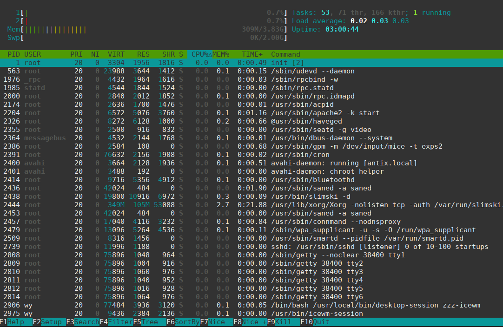
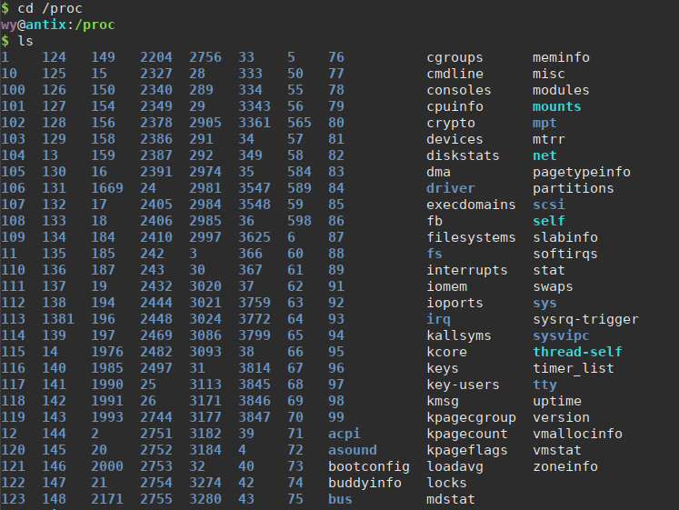
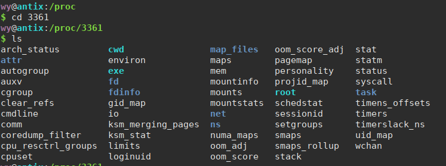

26. IV.3 Gestion des Processus sous Linux
26.1 IV.3.1 Généralités sur les processus (rappel)
Dans Linux et les systèmes Unix-like, un processus est une instance d'un programme en cours d'exécution. Chaque processus a un identifiant unique (PID), un identifiant de son parent (PPID), un propriétaire (utilisateur), une priorité, un état (running, sleeping, zombie, etc.) et consomme des ressources système (CPU, mémoire).
Les processus peuvent être lancés en foreground (attachés au terminal) ou en background (détachés du terminal). Ils peuvent être contrôlés via des signaux (ex: SIGTERM pour terminer, SIGKILL pour forcer la terminaison).
Relation avec les jobs
Présenté simplement : Un job = un ou plusieurs processus
| Aspect | Processus | Tâche (job) |
|---|---|---|
| Niveau | Noyau (système) | Shell (bash) |
| Identifiant | PID | Job ID (%1, %2) |
| Composition | Un seul programme | 1 ou plusieurs processus |
| Gestion | Automatique par le système | Via jobs, fg, bg |
26.2 IV.3.2 Commande ps : lister les processus à un instant donné
La commande ps (Process Status) capture un cliché instantané des processus existants lors de son exécution. Utilisée seule sans argument, elle n'affiche que les processus attachés au terminal actuel de l'utilisateur :
Processus avec ou sans terminal (TTY)
Un processus avec terminal est lié à une session interactive (terminal virtuel, console locale, session SSH) et lit/écrit sur ce terminal. Par exemple, l'éditeur nano :
À l'inverse, un processus sans terminal (marqué d'un point d'interrogation ? dans la colonne TTY) est un démon ou service système tournant en arrière-plan (cron, sshd, systemd).
26.2.1 IV.3.2.1 Syntaxes et styles d'options
Sous Linux, ps supporte trois conventions de syntaxe :
-
Style UNIX (standard POSIX) : précédé d'un tiret simple (ex.
ps -ef,ps -u root). -
Style BSD : sans aucun tiret (ex.
ps aux,ps ax). -
Style GNU : précédé d'un double tiret (ex.
ps --forest,ps --pid 811).
Pourquoi ps aux et non ps -aux ?
En pure syntaxe POSIX/UNIX, l'option -u attend un nom d'utilisateur (donc ps -u x tenterait d'afficher les processus de l'utilisateur nommé x). En syntaxe BSD historique, aux sans tiret signifie : a (tous les processus de tous les terminaux), u (affichage détaillé avec utilisateur), x (processus détachés de tout terminal).
26.2.2 IV.3.2.2 Combinaisons courantes
ps aux: vue exhaustive style BSD avec usage CPU/RAM.ps -ef: vue exhaustive style Unix avec colonnes UID et PPID.ps -u <utilisateur>: filtre les processus d'un compte particulier.ps -ef --forest: affiche l'arborescence visuelle parents/enfants.ps -eo pid,user,pcpu,pmem,comm --sort=-%cpu: sélection sur mesure des colonnes triées par consommation CPU.
Exemple d'affichage avec ps aux :
$ ps aux
USER PID %CPU %MEM VSZ RSS TTY STAT START TIME COMMAND
root 1 0.0 0.0 3304 1960 ? Ss Mar11 0:01 /sbin/init
root 2 0.0 0.0 0 0 ? S Mar11 0:00 [kthreadd]
root 3 0.0 0.0 0 0 ? I< Mar11 0:00 [rcu_gp]
(...)
alice 4553 0.0 0.0 77784 3620 pts/0 R+ 11:12 0:00 ps aux
Signification des colonnes principales :
- USER : propriétaire du processus.
- PID : identifiant unique du processus.
- PPID : identifiant du processus parent.
- %CPU : part de temps CPU consommée (rapportée à un seul cœur logique).
- %MEM : pourcentage d'utilisation de la mémoire vive physique (RAM).
- VSZ (Virtual Set Size) : taille totale de l'espace d'adressage virtuel réservé par le processus en Kio (inclut RAM, swap, bibliothèques partagées et zones allouées).
- RSS (Resident Set Size) : mémoire RAM physique réellement occupée en Kio.
- TTY : terminal de contrôle (
pts/0,tty1, ou?pour les démons). - STAT : état du processus (voir ci-après).
- START : heure ou date de démarrage.
- TIME : temps processeur cumulé consommé par le programme.
- COMMAND : ligne de commande ayant démarré le processus.
26.2.2.1 IV.3.2.2.1 Détail des codes d'état (STAT)
R(Running) : en cours d'exécution sur le CPU ou dans la file d'attente d'ordonnancement.S(Sleeping) : en sommeil interruptible (attend un signal, une saisie ou une ressource).D(Uninterruptible Sleep) : en attente non interruptible (généralement bloqué sur une opération disque/E-S matérielle).T(Stopped) : arrêté ou suspendu (par Ctrl + Z ou signalSIGSTOP).Z(Zombie) : processus terminé dont le parent n'a pas encore lu le code retour.
Modificateurs fréquents :
- < : priorité élevée (valeur nice négative).
- N : priorité basse (nice positive, poli avec les autres).
- s : leader de session (ex. un shell maître).
- + : appartient au groupe de processus actif au premier plan.
- RSS : mémoire physique hors swap utilisée par le processus. C’est la quantité de RAM que le processus utilise réellement à un moment donné. Il inclut les pages de mémoire qui sont actuellement en RAM, mais pas celles qui ont été paginées (swappées) sur le disque.
RSS est généralement plus petit que VSZ, car une partie de la mémoire virtuelle peut être paginée ou partagée.
La valeur de VSZ peut être trompeuse, car elle inclut tout l’espace mémoire réservé, même si une grande partie n’est pas utilisée ou est partagée. RSS donne une meilleure idée de la quantité de RAM que le processus consomme réellement.
On utilise en général des filtres pour trouver un processus spécifique, par exemple ps -aux | grep bash pour trouver les processus bash. Ici, PID=5112 est le PID du processus bash en cours d'exécution.
$ ps -aux | grep /bin/bash
wy 2967 0.0 0.0 77484 3928 ? Ss Mar11 0:00 /bin/bash /usr/local/bin/desktop-session zzz-icewm
wy 3088 0.0 0.0 76956 1388 ? S Mar11 0:00 /bin/bash /home/wy/.desktop-session/startup
wy 3176 0.0 0.0 77352 3672 ? S Mar11 0:00 /bin/bash /usr/bin/devmon --exec-on-drive desktop-defaults-run -fm "%d" --exec-on-disc desktop-defaults-run -fm "%d"
wy 4494 0.0 0.1 78260 5112 pts/0 Ss 11:12 0:00 /bin/bash
wy 4565 0.0 0.0 76356 2100 pts/0 S+ 11:17 0:00 grep /bin/bash
Attention
Sous Linux, la commande ps est unique car elle accepte trois styles d'options différents (Unix, BSD et GNU), et l'utilisation ou non d'un tiret (-) change l'interprétation de la commande.
- BSD : Les options ne suivent pas un tiret initial
- UNIX : Les options suivent un tiret initial :
- GNU : Les options suivent un double tiret initial :
Dans les trois cas, ps renvoie des informations sur le processus dont le PID est 811
26.3 IV.3.3 Commande top : Lister les processus en temps réel
Lorsqu’il s’agit de surveiller les processus, ps et top sont deux outils indispensables. Le premier donne une vue statique à un instant donné, tandis que le second produit un affichage dynamique et interactif mis à jour en continu.
26.3.1 IV.3.3.1 Utilisation de la commande top
Pour lancer top, tapez simplement son nom :
$ top
top - 05:10:08 up 56 min, 1 user, load average: 0.00, 0.02, 0.06
Tasks: 219 total, 1 running, 218 sleeping, 0 stopped, 0 zombie
%Cpu(s): 0.5 us, 0.7 sy, 0.0 ni, 98.8 id, 0.0 wa, 0.0 hi, 0.0 si, 0.0 st
MiB Mem : 3919.4 total, 3070.5 free, 526.4 used, 545.5 buff/cache
MiB Swap: 2048.0 total, 2048.0 free, 0.0 used. 3392.9 avail Mem
PID USER PR NI VIRT RES SHR S %CPU %MEM TIME+ COMMAND
2444 root 20 0 357940 108376 53088 S 1.7 2.7 0:04.62 Xorg
3295 wy 20 0 310720 33216 27252 S 1.0 0.8 0:01.41 roxterm
2986 wy 20 0 148572 19312 14972 S 0.3 0.5 0:16.26 icewm
3553 wy 20 0 78204 4660 2656 R 0.3 0.1 0:00.03 top
1 root 20 0 3304 1956 1816 S 0.0 0.0 0:00.29 init
2 root 20 0 0 0 0 S 0.0 0.0 0:00.01 kthreadd
3 root 0 -20 0 0 0 I 0.0 0.0 0:00.00 rcu_gp
4 root 0 -20 0 0 0 I 0.0 0.0 0:00.00 rcu_par_gp
5 root 0 -20 0 0 0 I 0.0 0.0 0:00.00 slub_flushwq
6 root 0 -20 0 0 0 I 0.0 0.0 0:00.00 netns
8 root 0 -20 0 0 0 I 0.0 0.0 0:00.00 kworker/0:0H-kblockd
10 root 0 -20 0 0 0 I 0.0 0.0 0:00.00 mm_percpu_wq
11 root 20 0 0 0 0 I 0.0 0.0 0:00.00 rcu_tasks_kthread
12 root 20 0 0 0 0 I 0.0 0.0 0:00.00 rcu_tasks_trace_kthread
13 root 20 0 0 0 0 S 0.0 0.0 0:00.12 ksoftirqd/0
14 root 20 0 0 0 0 I 0.0 0.0 0:00.10 rcu_preempt
15 root rt 0 0 0 0 S 0.0 0.0 0:00.00 migration/0
Les informations fournies par top sont réparties en deux parties : la zone de synthèse et la zone des tâches.
26.3.1.1 IV.3.3.1.1 1. La zone de synthèse
La zone de synthèse comprend les cinq premières lignes de l'en-tête :
top - 05:10:08 up 56 min, 1 user, load average: 0.00, 0.02, 0.06:05:10:08: heure actuelle du système.up 56 min: durée de fonctionnement sans interruption (uptime).1 user: nombre d'utilisateurs connectés.load average: 0.00, 0.02, 0.06: charge moyenne du système sur les 1, 5 et 15 dernières minutes.
Tasks: 219 total, 1 running, 218 sleeping, 0 stopped, 0 zombie: répartition des processus :219 total: nombre total de processus dans la table du noyau.1 running: processus en cours d'exécution ou prêts à s'exécuter.218 sleeping: processus endormis (en attente d'un événement ou d'une E/S).0 stopped: processus arrêtés (par un signalSIGSTOPouCtrl+Z).0 zombie: processus terminés dont le parent n'a pas encore lu le code de retour.
%Cpu(s): 0.5 us, 0.7 sy, 0.0 ni, 98.8 id, 0.0 wa, 0.0 hi, 0.0 si, 0.0 st: pourcentage de temps processeur :0.5 us(user) : processus utilisateurs non renicés.0.7 sy(system) : code exécuté dans le noyau.0.0 ni(nice) : processus utilisateurs ayant une priorité modifiée (nice positif).98.8 id(idle) : temps d'inactivité du processeur.0.0 wa(wait) : temps d'attente lié aux entrées/sorties disque ou réseau.0.0 hi(hardware interrupt) : traitement des interruptions matérielles.0.0 si(software interrupt) : traitement des interruptions logicielles.0.0 st(steal time) : temps CPU dérobé par l'hyperviseur pour d'autres machines virtuelles.
MiB Mem : 3919.4 total, 3070.5 free, 526.4 used, 545.5 buff/cache: mémoire vive physique (en mébibyts) :3919.4 total: RAM totale installée.3070.5 free: RAM totalement inutilisée.526.4 used: RAM consommée par les programmes.545.5 buff/cache: mémoire utilisée par les tampons et le cache disque du noyau (libérable immédiatement en cas de besoin).
MiB Swap: 2048.0 total, 2048.0 free, 0.0 used. 3392.9 avail Mem: espace d'échange et mémoire disponible :2048.0 total: espace swap total.2048.0 free: espace swap libre.0.0 used: espace swap utilisé.3392.9 avail Mem: estimation de la quantité réelle de RAM disponible pour lancer de nouvelles applications sans déclencher d'écriture sur le swap.
26.3.1.2 IV.3.3.1.2 2. La zone des tâches
La liste inférieure détaille chaque processus :
PID: identifiant unique du processus.USER: propriétaire du processus.PR: priorité interne attribuée par l'ordonnanceur du noyau.NI: valeur nice de courtoisie (de -20 à +19).VIRT: mémoire virtuelle totale réservée par le processus (code, données, bibliothèques, swap).RES: mémoire résidente réelle occupée en RAM physique.SHR: mémoire partagée avec d'autres processus (ex. bibliothèques partagées).S: état du processus :S: endormi interruptible (sleeping).D: endormi ininterruptible (uninterruptible sleep, généralement attente disque).R: en cours d'exécution ou prêt à être exécuté (runnable).T: arrêté par un signal (stopped).Z: zombie.
%CPU: pourcentage de temps CPU consommé depuis le dernier rafraîchissement.%MEM: pourcentage de mémoire vive physique (RAM) utilisé par le processus.TIME+: temps processeur cumulé consommé par le processus depuis son démarrage.COMMAND: nom du programme ou commande ayant lancé le processus.
26.3.2 IV.3.3.2 Raccourcis interactifs dans top
Pendant l'exécution de top, vous pouvez interagir directement avec l'affichage grâce aux touches suivantes :
M: Trier la liste par utilisation de mémoire (%MEM).P: Trier la liste par pourcentage d'utilisation processeur (%CPU, ordre par défaut).N: Trier par numéro de PID.T: Trier par temps processeur cumulé (TIME+).R: Inverser l'ordre de tri (croissant / décroissant).1: Afficher ou masquer le détail de chaque cœur processeur individuellement.c: Basculer entre le nom simple du binaire et la ligne de commande complète avec ses arguments.k: Envoyer un signal à un processus (kill).topdemandera le PID et le numéro du signal (15 par défaut).r: Modifier la priorité d'un processus (renice).topdemandera le PID et la nouvelle valeur nice.u: Filtrer les processus par nom d'utilisateur.V: Afficher l'arborescence hiérarchique des processus (vue forêt).tetm: Modifier l'affichage des lignes CPU et mémoire (texte brut, barres de progression).W: Enregistrer les réglages actuels dans le fichier~/.toprc.q: Quittertop.hou?: Afficher l'aide interactive complète.
26.4 IV.3.4 Commande htop
La commande htop est une version interactive, visuelle et moderne de top. C'est un gestionnaire de processus très populaire dans l'environnement terminal.
Voici ses principaux atouts :
- Interface visuelle et colorée : barres graphiques intuitives pour chaque cœur CPU, la RAM et le swap.
- Navigation aisée : défilement vertical et horizontal dans la liste des processus à l'aide des touches fléchées.
- Actions directes via les touches de fonction : tuer un processus (F9), modifier sa courtoisie (nice) (F7 / F8), rechercher un nom (F3) ou filtrer (F4).
- Vue en arbre : la touche F5 affiche directement la hiérarchie parent-enfant des processus.

[!TIP] Une autre alternative avancée orientée surveillance de serveurs est l'outil
atop. Vous pouvez installer ces utilitaires via votre gestionnaire de paquets (apt install htop atop).
26.5 IV.3.5 Commande pgrep
La commande pgrep permet de rechercher des processus par leur nom ou leurs attributs, et renvoie uniquement leurs PID :
$ pgrep bash
3361
$
$ ps -aux | grep bash
wy 2905 0.0 0.0 77484 3940 ? Ss 06:50 0:00 /bin/bash /usr/local/bin/desktop-session zzz-icewm
wy 3021 0.0 0.0 76956 1560 ? S 06:50 0:00 /bin/bash /home/wy/.desktop-session/startup
wy 3113 0.0 0.0 77352 3708 ? S 06:50 0:00 /bin/bash /usr/bin/devmon --exec-on-drive desktop-defaults-run -fm "%d" --exec-on-disc desktop-defaults-run -fm "%d"
wy 3361 0.0 0.1 78000 4912 pts/0 Ss 06:51 0:00 /bin/bash
wy 3456 0.0 0.0 76356 2164 pts/0 S+ 07:01 0:00 grep bash
Dans l'exemple ci-dessus, seul le processus 3361 s'appelle strictement bash. Les autres sont des scripts exécutés via bash que pgrep ignore par défaut (à moins d'utiliser l'option -f pour analyser l'ensemble de la ligne de commande).
pgrep accepte également les expressions régulières. Par exemple, pour rechercher tous les processus dont le nom commence par « ba » :
26.6 IV.3.6 Commande pidof
La commande pidof est un utilitaire simple qui recherche les identifiants (PID) des programmes en cours d'exécution à partir de leur nom exact de binaire :
Ses spécificités :
- Recherche exacte : elle associe le nom d'un exécutable (ex.
bash) à la liste complète de ses PID. - Usage en script : très couramment utilisée dans les scripts d'administration pour tester si un démon s'exécute ou pour récupérer rapidement ses PID.
26.7 IV.3.7 Commande kill
La commande kill est l'outil fondamental pour envoyer des signaux à un processus, le plus souvent pour solliciter son arrêt ou forcer sa fermeture.
Attention
Contrairement à ce que son nom pourrait laisser penser, kill ne détruit pas nécessairement un processus ; elle lui envoie un signal logiciel que le processus peut intercepter, sauf pour certains signaux critiques gérés directement par le noyau.
26.7.1 IV.3.7.1 Syntaxe
La commande prend en argument l'identifiant du processus (PID) et éventuellement le signal à lui transmettre. Si aucun signal n'est précisé, le signal SIGTERM (15) est envoyé par défaut :
26.7.2 IV.3.7.2 Signaux les plus courants
15ouSIGTERM(kill -15 PIDoukill -TERM PID) : signal de terminaison normal (méthode douce). Il laisse au programme le temps de fermer ses fichiers, sauvegarder son état et libérer ses ressources.9ouSIGKILL(kill -9 PIDoukill -KILL PID) : arrêt forcé immédiat (méthode brutale). Le noyau détruit le processus sans que celui-ci puisse intercepter ou ignorer le signal. À utiliser uniquement en dernier recours lorsque le processus est bloqué.1ouSIGHUP(kill -1 PIDoukill -HUP PID) : signal de raccrochage (hangup). Utilisé par la plupart des services et démons (Apache, Nginx, SSH...) pour recharger leur configuration sans interrompre les connexions actives.2ouSIGINT: interruption, équivalent au raccourci clavier Ctrl+C.19ouSIGSTOP: suspension immédiate du processus par le noyau (non interceptable).18ouSIGCONT: reprise de l'exécution d'un processus suspendu.
26.7.3 IV.3.7.3 Lister les signaux supportés
L'option -l affiche la liste de tous les signaux disponibles sur le système :
$ kill -l
1) SIGHUP 2) SIGINT 3) SIGQUIT 4) SIGILL 5) SIGTRAP
6) SIGABRT 7) SIGBUS 8) SIGFPE 9) SIGKILL 10) SIGUSR1
11) SIGSEGV 12) SIGUSR2 13) SIGPIPE 14) SIGALRM 15) SIGTERM
16) SIGSTKFLT 17) SIGCHLD 18) SIGCONT 19) SIGSTOP 20) SIGTSTP
21) SIGTTIN 22) SIGTTOU 23) SIGURG 24) SIGXCPU 25) SIGXFSZ
26) SIGVTALRM 27) SIGPROF 28) SIGWINCH 29) SIGIO 30) SIGPWR
31) SIGSYS 34) SIGRTMIN 35) SIGRTMIN+1 36) SIGRTMIN+2 37) SIGRTMIN+3
38) SIGRTMIN+4 39) SIGRTMIN+5 40) SIGRTMIN+6 41) SIGRTMIN+7 42) SIGRTMIN+8
43) SIGRTMIN+9 44) SIGRTMIN+10 45) SIGRTMIN+11 46) SIGRTMIN+12 47) SIGRTMIN+13
48) SIGRTMIN+14 49) SIGRTMIN+15 50) SIGRTMAX-14 51) SIGRTMAX-13 52) SIGRTMAX-12
53) SIGRTMAX-11 54) SIGRTMAX-10 55) SIGRTMAX-9 56) SIGRTMAX-8 57) SIGRTMAX-7
58) SIGRTMAX-6 59) SIGRTMAX-5 60) SIGRTMAX-4 61) SIGRTMAX-3 62) SIGRTMAX-2
63) SIGRTMAX-1 64) SIGRTMAX
Droits d'accès
- Un utilisateur standard ne peut envoyer des signaux qu'à ses propres processus.
- Pour agir sur un processus appartenant à un autre utilisateur ou au système, les privilèges
root(viasudo) sont indispensables.
26.7.4 IV.3.7.4 Commandes pkill et killall
pkill: permet d'envoyer un signal à des processus en ciblant leur nom (ex.pkill firefox).killall: termine toutes les instances d'un programme partageant le même nom exact de binaire.
Exemple combiné :
$ pgrep sleep
1201
$ pkill sleep
[1]+ Terminated sleep 60
$
$ sleep 60 &
[1] 1246
$ sleep 70 &
[2] 1247
$
$ killall sleep
[1]- Terminated sleep 60
[2]+ Terminated sleep 70
Pour cibler un ensemble de PID avec kill classique sans passer par pkill, on peut utiliser la substitution de commande :
26.8 IV.3.8 Le pseudo-système de fichiers /proc
Sous Linux, le répertoire /proc est un système de fichiers virtuel créé dynamiquement en mémoire vive par le noyau. Il ne consomme aucun espace sur le disque dur physique et sert d'interface directe de communication avec l'état interne du noyau.
26.8.1 IV.3.8.1 Structure de /proc
En listant le contenu de /proc, on observe :
- Des répertoires numériques
/proc/[PID]: chaque processus en cours d'exécution dispose de son propre répertoire désigné par son PID. - Des fichiers d'informations système : par exemple
/proc/meminfo(consulté parfree),/proc/cpuinfo(caractéristiques du processeur), ou/proc/loadavg(charge moyenne).

26.8.2 IV.3.8.2 Anatomie d'un répertoire de processus /proc/[PID]/
Pour un processus donné (par exemple le PID 3361), son répertoire /proc/3361/ contient :
| Fichier / Répertoire | Rôle |
|---|---|
cmdline |
Commande initiale complète avec tous ses arguments (séparés par des octets nuls). |
environ |
Variables d'environnement exportées vers le processus au lancement. |
exe |
Lien symbolique pointant vers le binaire exécutable réel sur le disque. |
fd/ |
Répertoire listant les descripteurs de fichiers ouverts (fichiers, sockets, tubes). |
status |
Résumé lisible de l'état du processus (UID/GID, mémoire VmSize/VmRSS, threads). |
io |
Statistiques sur les entrées/sorties disque effectuées par le processus. |

Tous ces fichiers ont une taille apparente de 0 octet sur le disque, car leurs données sont générées à la volée par le noyau au moment de leur lecture. C'est dans /proc que des outils comme ps, top, htop ou lsof puisent l'ensemble de leurs informations.
26.9 IV.3.9 Mesurer le temps d'exécution : la commande time
La commande time permet de mesurer avec précision le temps nécessaire à l'exécution d'un programme ou d'une commande :
La sortie décompose le temps mesuré selon trois critères :
real(wall-clock time) : temps total réel écoulé entre le début et la fin de l'exécution, tel qu'il serait mesuré par un chronomètre externe.user(User CPU time) : temps CPU cumulé passé en mode utilisateur à exécuter le code propre au programme.sys(System CPU time) : temps CPU passé en mode noyau au nom du processus (exécutions d'appels système tels que les accès aux fichiers ou les allocations mémoire).
[!NOTE] Le shell
bashfournit sa propre version interne (builtin) detime. Il existe également un exécutable autonome/usr/bin/time, qui propose des options supplémentaires comme/usr/bin/time -v commandepour obtenir un rapport détaillé incluant la consommation mémoire maximale (Maximum resident set size) et les entrées/sorties.